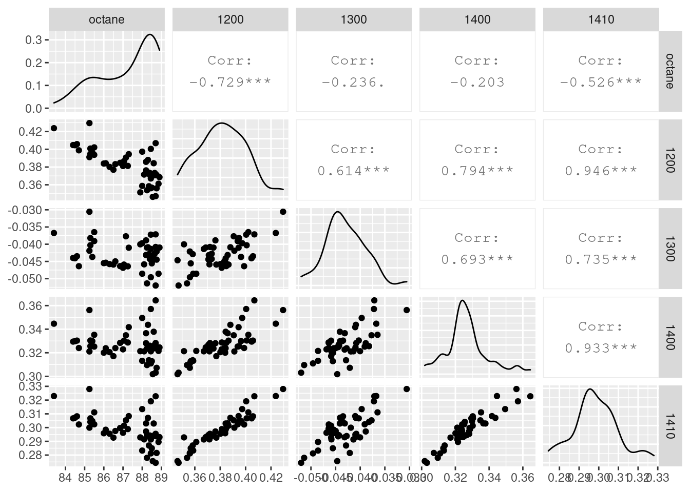
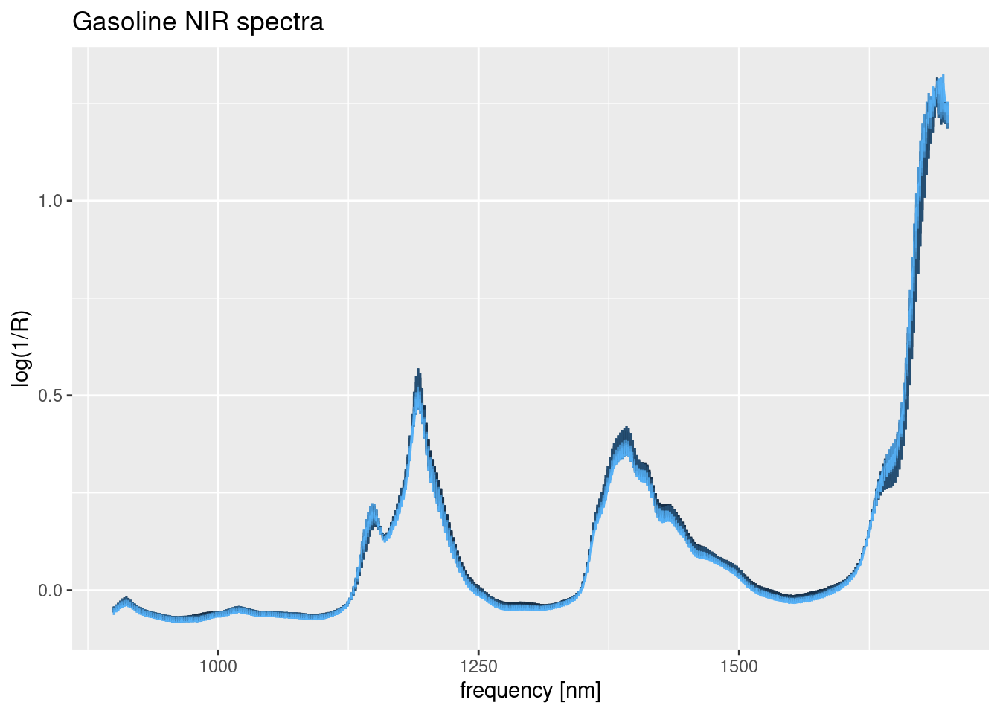
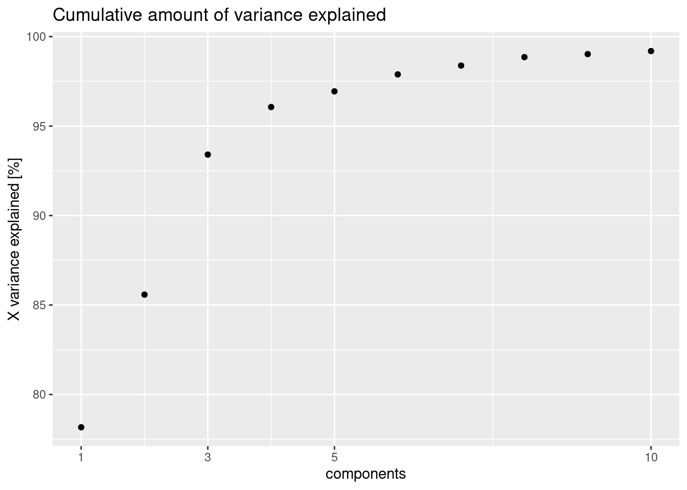
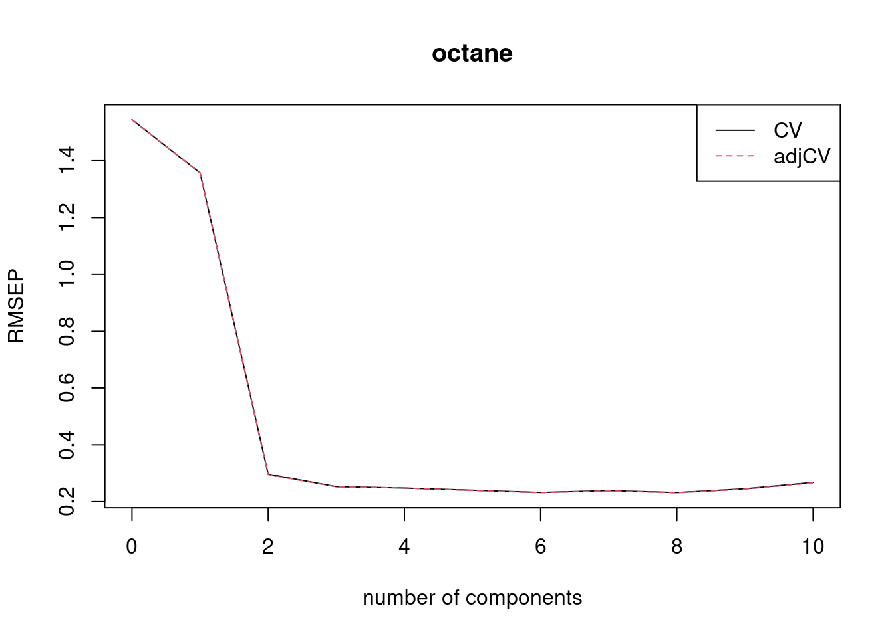
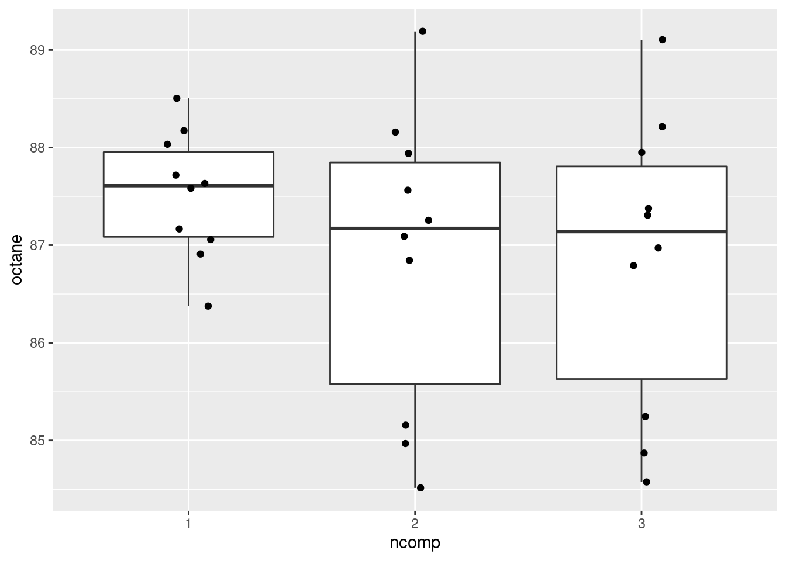

PLS(Partial Least Squares) 회귀는 주성분 분석과 다중 회귀를 결합·확장하여 개발되었다. 계량 경제 등 사회 과학 문제에 활용되기 시작하였고, 계산 화학 등 그 적용 분야가 점점 확장되어 왔다. 통상적인 다중 선형 회귀에서 다음 모델에 대하여,
\(Y = X\beta + \varepsilon\)
오차항 \(\varepsilon = Y - X \beta\)을 최소 제곱 방식으로 구한다는 것은 두 벡터의 차를 줄이는 \(\beta\)를 얻는 것이다. 개념적으로 두 벡터의 내적을 최대로 만들어도 오차항을 최소화하는 목적을 달성할 수 있다. 주성분 분석이 이런 원리를 이용한다. 특성의 가중치 고정하고 \(||w|| = 1\), 특성 벡터의 선형 변환 후 \(t = X w\) 그 크기를 생각해 보자. X를 특이값 분해(SVD, singular value decomposition)하여 \(X = U \Sigma V^T\) 삽입하면 다음과 같다.
\(||t||^2 = ||w^T X^T X w|| = || w^T V \Sigma^T U^T U \Sigma V^T w|| = || w^T V \Sigma^2 V^T w||\)
혹은, \(||t||^2 \le ||\Sigma^2||\) 식이 되어, 주성분 분석은 X의 공분산 특성을 최대한 유지하는 가중치를 구해내는 다음 방법이 된다.
\(\text{argmax}_{w^T w = 1} w^T X^T X w\)
주성분 분석으로 특성의 전체 분산 특성을 간직하면서 상관성이 높은 변수를 제거해 나갈수 있다. 하지만 응답 특성이 특징 변수의 분산과 크게 상관이 없는 경우, 주성분 분석을 통하여 예측 변수를 줄여 회귀를 진행하여도 큰 효과를 보지 못할 수 있다. 이 점에서 부분 최소 제곱 방법으로 확장된다. 위에서 정의된 문제를 \(t = X w\)와 \(u = Yc\) 식을 이용하여 \(\max t^T u\) 혹은 다음과 같은 문제로 바꾼다.
\(\text{argmax}_{w^T w = 1, c^T c = 1} w^T X^T Y c\)
이 식을 살펴보면 최소 제곱과 주성분 분석이 결합된 것을 알 수 있다. 이 식을 풀면 \(X = T P^T\)로 \(T\)는 \(T^T T = I\)인 점수 행렬(score matrix)이라 하고, \(P\)는 하중 행렬(loading matrix)이라 칭한다. \(Y\)는 추정값으로 \(\hat Y = T B C^T\)로 \(B\)는 대각 형렬로 회귀 가중치가 담겨있다. 수치적으로 푸는 방법에 대해서는 pls 패키지 매뉴얼[1]이나 Abdi[2]의 문헌을 참고하라.
pls 패키지의 gasoline 예제로 간단하게 사용 방법을 살펴보자. gasoline 데이터 셋에는 온탄가 (octane) 응답 변수와 측정 NIR 스팩트럼 특징 변수가 들어있다. 매뉴얼과 다르게 tidy 정리후 해석을 진행하였다.
library(tidyverse)
library(GGally)
library(pls) # partial least squares package
options(digits = 4)
data(gasoline)
m <- matrix(gasoline$NIR, nrow = 60)
colnames(m) <- seq(900, 1700, by = 2)
gas_data <- as_tibble(m) %>%
mutate(octane = gasoline$octane) %>%
relocate(octane)
# gas_data[1:5, c(1, sample(2:402, size = 5))]매뉴얼 대로 60개의 NIR스팩트럼을 50개의 훈련셋과 10개의 검정셋으로 나누었다. 몇 개 주파수에 대해서만 상관성 및 산점도를 그려본다.
gas_train <- gas_data[1:50,]
gas_test <- gas_data[51:60,]
gas_train %>%
select(octane, "1200", "1300", "1400", "1410") %>%
ggpairs()
주파수 1400 nm와 1410 nm의 데이터는 이웃 주파수로 상관성이 높은데 octane과의 상관성에는 차이가 난다. 1400 nm와 1200 nm를 비교해 보면 주파수가 떨어져 있어도 상관성이 높을 수 있다는 것을 확인하였다. 스펙트럼 전체의 측정 결과를 살펴보자.
gas_train %>%
select(-octane) %>%
mutate(id = row_number()) %>%
pivot_longer(cols = -id, names_to = "freq", values_to = "log_reciprocal_R") %>%
mutate(freq = as.numeric(freq)) %>%
ggplot(aes(x = freq, y = log_reciprocal_R, color = id)) +
geom_line() +
labs(title = "Gasoline NIR spectra") +
xlab("frequency [nm]") +
ylab("log(1/R)") +
theme(legend.position = "none")
900 nm에서 1400 nm까지 401개의 측정 점의 데이터가 특성값이며 이웃 측정값과 상관 관계가 높고, 마루 근방에서 분산이 커지는 것을 확인하였다. 훈련 데이터가 50개 뿐으로 401개의 특성 값으로 단순하게 선형회귀를 수행할 수 없다. 부분 최소 제곱 방식으로 적합을 수행해 보자. LOO(leave-one-out) 방식의 교차 검증을 수행하여 몇 개의 항을 이용할 지 모델 변수에 대한 튜닝을 할 수 있다.
fit_1 <- plsr(octane ~ ., ncomp = 10, data = gas_train, validation = "LOO")
summary(fit_1)## Data: X dimension: 50 401
## Y dimension: 50 1
## Fit method: kernelpls
## Number of components considered: 10
##
## VALIDATION: RMSEP
## Cross-validated using 50 leave-one-out segments.
## (Intercept) 1 comps 2 comps 3 comps 4 comps 5 comps 6 comps
## CV 1.545 1.357 0.2966 0.2524 0.2476 0.2398 0.2319
## adjCV 1.545 1.356 0.2947 0.2521 0.2478 0.2388 0.2313
## 7 comps 8 comps 9 comps 10 comps
## CV 0.2386 0.2316 0.2449 0.2673
## adjCV 0.2377 0.2308 0.2438 0.2657
##
## TRAINING: % variance explained
## 1 comps 2 comps 3 comps 4 comps 5 comps 6 comps 7 comps 8 comps
## X 78.17 85.58 93.41 96.06 96.94 97.89 98.38 98.85
## octane 29.39 96.85 97.89 98.26 98.86 98.96 99.09 99.16
## 9 comps 10 comps
## X 99.02 99.19
## octane 99.28 99.39ec <- tibble(explained = explvar(fit_1)) %>%
mutate(comp = 1:10,
cexplained = cumsum(explained))
ec %>%
ggplot(aes(x = comp, y = cexplained)) +
scale_x_continuous(breaks = c(1, 3, 5, 10),
labels = c(1, 3, 5, 10)) +
labs(title = "Cumulative amount of variance explained") +
xlab("components") +
ylab("X variance explained [%]") +
geom_point()
X의 분산은 3개 항이면 93%를 설명할 수 있고, octane은 2개 항으로 대부분의 분산을 설명할 수 있다.
plot(RMSEP(fit_1), legendpos = "topright")
적합 수행 후 예측은 다음과 같이 수행할 수 있다. 이때 사용할 항의 개수를 지정해 준다.
pred <- predict(fit_1, ncomp = c(1, 2, 3), newdata = gas_test)
pred <- tibble("1" = pred[,,1], "2" = pred[,,2], "3" = pred[,,3]) %>%
pivot_longer(cols = everything(), names_to = "ncomp", values_to = "octane")
pred %>%
ggplot(aes(x = ncomp, y = octane)) +
geom_boxplot() +
geom_jitter(width = 0.1)
2항이나 3항을 사용한 예측 결과가 거의 동일한 것을 확인할 수 있다.
library(tidymodels)
pred %>%
pivot_wider(names_from = ncomp, values_from = octane) %>%
unnest(cols = everything()) %>%
bind_cols(truth = gas_test$octane) %>%
metrics(truth = truth, "2")## Warning: Values are not uniquely identified; output will contain list-cols.
## * Use `values_fn = list` to suppress this warning.
## * Use `values_fn = length` to identify where the duplicates arise
## * Use `values_fn = {summary_fun}` to summarise duplicates## # A tibble: 3 x 3
## .metric .estimator .estimate
## <chr> <chr> <dbl>
## 1 rmse standard 0.244
## 2 rsq standard 0.977
## 3 mae standard 0.2102항 만으로도 \(R^2=0.97\)로 높은 설명력을 가진 적합이 수행되었음을 확인할 수 있다.